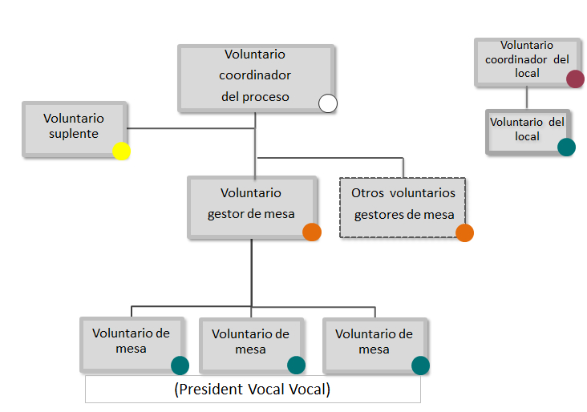

Voluntarios para la jornada de participación ciudadana del 9 de noviembre de 2014
|
Se han comunicado por correo electrónico las asignaciones de las funciones como voluntarios. Si te inscribiste como voluntario/a y no tienes el mensaje que te hemos enviado desde tuparticipes@gencat.cat en la bandeja de entrada, revisa la bandeja de “correo basura”, “spam” o “correo no deseado”. |
¡Muchas gracias por tu participación!
Agradecemos tu participación como voluntario para la jornada de participación ciudadana del próximo 9 de noviembre. Para lograr éxito en este proceso es necesaria una buena organización y coordinación entre todos los voluntarios. Por eso, conviene conocer bien el organigrama, las funciones y las tareas asumidas. Tu contribución será clave para que esta jornada sea todo un éxito y se realice con todas las garantías de seguridad, civismo y democracia. Sin tu implicación y tu apoyo el 9N no sería posible.
Información general
Tipus de tasques
El proceso de participación cuenta con varias clases de voluntarios, en función de los aspectos con los que estén relacionadas sus tareas:
Los locales donde se participa
- Son los coordinadores del local y los voluntarios del local
El proceso de participación
- Son los coordinadores del proceso, los gestores de mesa, los miembros de mesa –presidentes y vocales– y los suplentes
La recogida de datos o la atención de incidencias
- Son los operadores del Centro de Recogida de Información (CRI)
La gestión internacional del proceso de participación
- Son los voluntarios de los centros de participación en el exterior
Fecha, lugar y horario
Durante la jornada del 9 de noviembre de 2014, los voluntarios llevarán a cabo sus tareas en el lugar y los horarios que se indican para cada caso en la información específica para cada clase de voluntario y que se reproduce esquemáticamente a continuación.
| Tarea | Lugar | Hora de inicio | Hora final |
|---|---|---|---|
| Coordinador/a del local | Local asignado | 7.30 h | Finalización de la jornada |
| Voluntario/a del local | Local asignado | 7.30 h | Finalización de la jornada |
| Coordinador/a del proceso | Local asignado | 7.30 h | Finalización de la jornada |
| Gestor/a de mesa | Local asignado | 8.00 h | Finalización de la jornada |
| Miembros de la mesa | Local asignado | 8.00 h | Finalización de la jornada |
| Suplentes | Local asignado | 8.00 h | Finalización de la jornada |
| Operadores del CRI | CTTI, Salvador Espriu, 45-51, Polígon Pedrosa - L'Hospitalet de Llobregat | 7.30 h | Finalización de la jornada |
Documentación
Para la jornada de participación, los voluntarios deben llevar la documentación siguiente:
El DNI
Una copia del mensaje electrónico recibido, con la designación como voluntario/a
La información general y específica contenida en este documento
La documentación que deban llevar de forma específica, de acuerdo con las tareas asumidas, que se indica en cada caso (hojas de transmisión de datos, listas de voluntarios, etc.)
Otras previsiones
Todos los voluntarios deben llevar el teléfono móvil que facilitaron cuando se inscribieron para que puedan ser localizados. Se recomienda llevar la batería del móvil cargada al 100% y el cargador.
Para mantener el clima de imparcialidad necesario, es conveniente que las personas del dispositivo no lleven ninguna prenda de vestir, complemento o emblema relacionados con alguno de los posicionamientos que son objeto de la jornada de participación.
La participación como voluntario no merita compensaciones económicas de ningún tipo ni da derecho a ningún permiso laboral.
Resolución de incidencias
Incidencias relacionadas con la asistencia o participación de los voluntarios
- En caso de que un voluntario/a necesite comunicar cualquier eventualidad, lo puede hacer desde las 8 hasta las 20 horas, al teléfono 93 551 59 90. En el supuesto de que quiera comunicar cualquier incidencia el mismo día 9 (en especial, la imposibilidad de asistencia), lo puede hacer al teléfono de incidencias 900 103 633.
- Corresponde al coordinador/a del proceso designar a las personas que deban suplir a los voluntarios que no hayan podido asistir o participar. Si, por cualquier motivo, la persona designada como coordinador/a del proceso no se presenta en el lugar y a la hora indicados, el coordinador/a del local o cualquier otro voluntario/a que lo detecte lo debe comunicar inmediatamente al Centro de Recogida de Información (CRI) y esperar a las indicaciones correspondientes.
- Las sustituciones definitivas de los miembros de la mesa se recogen en el acta.
- Las sustituciones definitivas de otros voluntarios que no son miembros de la mesa se comunican al CRI.
Incidencias relacionadas con el acceso a los locales
- Los voluntarios que se encuentren con problemas relacionados con el acceso a los locales de participación, lo deben comunicar al teléfono de incidencias 900 103 633.
Incidencias durante la jornada de participación (mesas, informática, orden público...)
- En el supuesto de que las mesas de participación no estén constituidas a las 9 horas, el GESTOR/A DE MESA lo debe comunicar al COORDINADOR/A DEL PROCESO y al teléfono de incidencias 900 103 633.
- Si se produce algún problema de orden público dentro del local de participación, hay que comunicarlo al COORDINADOR/A DEL PROCESO, que lo comunicará a los cuerpos de seguridad, si es necesario.
Información de interés
Todos los voluntarios asignados a un local podrán participar aunque no sea el que les corresponde según la dirección del DNI, lo cual se deberá hacer constar en el acta al final de la jornada.
Cierre de la jornada
Al cierre de la jornada, y una vez realizadas todas las tareas específicas, agradeceremos la colaboración para dejar ordenado el local de participación y depositar todo el material sobrante y que no sea reutilizable en el contenedor correspondiente.

Fecha de actualización: 3/11/2014